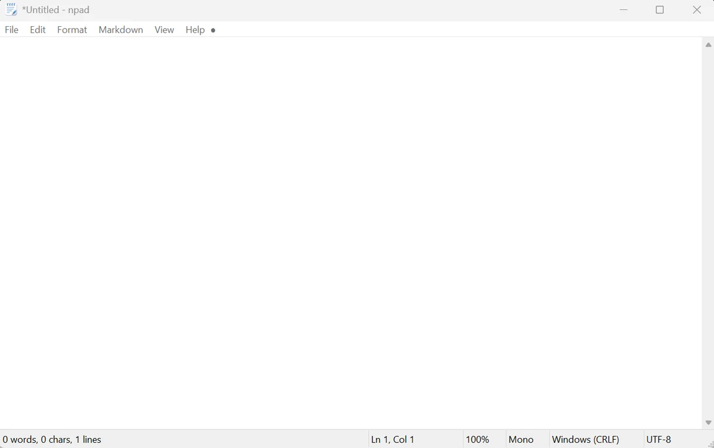
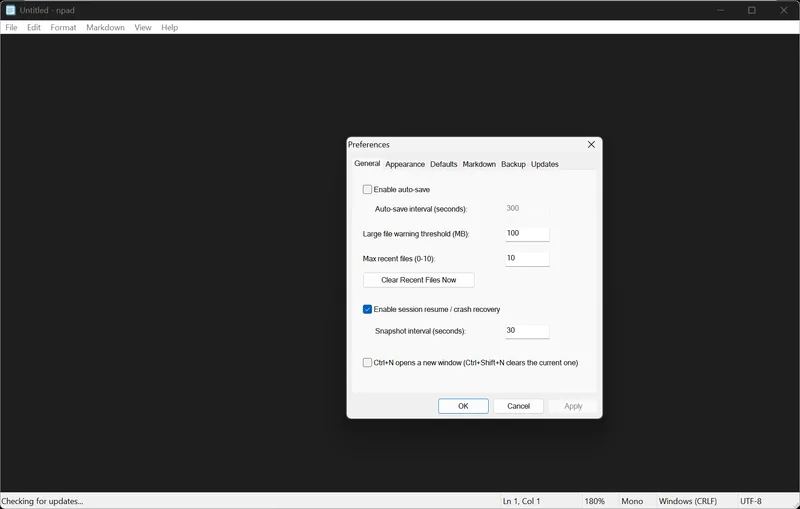

Installer
npad-v<version>-setup-win-x64.exe
The interactive installer. Adds npad to your PATH, to the “Open with” menu, optional file associations and bundled fonts. Silent install: /VERYSILENT.
A fast, native, Notepad-faithful text editor.
Out of the box it behaves like Windows 10 Notepad. The extras (crash recovery, atomic saves, dark mode, printing with preview) never get in the way, and anything that changes how Notepad behaves is opt-in.
Free and open source (MIT). Windows installer, MSI and portable .exe, code-signed.
Every release is on GitHub. All three Windows downloads install for the current user by default and need no admin rights.
npad-v<version>-setup-win-x64.exe
The interactive installer. Adds npad to your PATH, to the “Open with” menu, optional file associations and bundled fonts. Silent install: /VERYSILENT.
npad-v<version>-msi-win-x64.msi
For managed and silent deployment.
msiexec /i npad-v<version>-msi-win-x64.msi /qnAdd ALLUSERS=1 for a machine-wide install.
npad-v<version>-portable-win-x64.exe
Download and run it from anywhere. No installation, nothing written to the registry.
Get the portable .exeSmartScreen warning? Releases are code-signed, but Microsoft SmartScreen builds a publisher’s reputation over time, so it may still warn. Right-click the file, choose Properties, tick Unblock and click Apply (or choose “More info” then “Run anyway”). You can check the file against the SHA-256 in the release’s CHECKSUMS.txt. The installation reference covers every installer option.
A signed apt repository at pkg.npad.dev is being set up. Planned usage, final commands will be confirmed here when it goes live:
curl -fsSL https://pkg.npad.dev/npad.gpg \
| sudo tee /etc/apt/keyrings/npad.gpg >/dev/null
echo "deb [signed-by=/etc/apt/keyrings/npad.gpg] https://pkg.npad.dev/apt stable main" \
| sudo tee /etc/apt/sources.list.d/npad.list
sudo apt update && sudo apt install npadThe same repository will serve RPMs. Planned usage:
sudo dnf config-manager addrepo \
--from-repofile=https://pkg.npad.dev/rpm/npad.repo
sudo dnf install npadA .deb package will be attached to GitHub releases once the Linux packaging round lands.
Where the Linux port is today. The GTK 3 desktop build (one binary for X11 and Wayland) has its foundation in v0.34.0: windows, menus, editing, open and save with encodings and line endings preserved, recent files, colour schemes and the status bar. Find / Replace, Preferences and printing are still being ported. Follow progress in LINUX_PORT.md.
npad is plain C on native platform APIs, with no dependencies beyond system libraries. You need a C compiler and make; the Linux build also needs pkg-config and the GTK 3 development files.
git clone https://github.com/platima/npad.git
cd npad
make windows # Windows x64 with MinGW-w64 (cross or native)
make linux # Linux GTK 3 build, produces ./npad-linux
make test # unit testsSee the build instructions and CONTRIBUTING.md.
npad has one rule for every feature: out of the box it behaves like Windows 10 Notepad. Enhancements that can’t hurt you are on. Anything that changes or could destroy that behaviour is off until you switch it on.
Non-destructive: crash recovery, the status bar, recent files, atomic saves.
Anything that changes how Notepad behaves: auto-save, following the system colour scheme, Markdown list tools, update checks, change-detection notices, word counts.
npad file.txt works in any terminal.notepad alias for Win+R.Same chrome you already know, with a status bar that does something.


The new Windows Notepad has grown slow, heavy and crowded with features nobody asked for, and it doesn’t seem to be possible to truly get the original back. There are plenty of great editors (Sublime Text, Notepad++, Neovim), and the author uses several of them, but none follow the design philosophy of notepad.exe.
npad is that philosophy, kept: open instantly, type, save, close. Then a short list of improvements that earn their place without changing how it feels.
The documentation lives as Markdown in the repository. A browsable docs site at npad.dev/docs will follow.